Proof Through Experience
I don't see live events as simply “entertainment.” They are cultural necessities. The sense of belonging with a group of strangers who suddenly aren't strangers is what shaped me as a teenager. I am forever grateful for the shows I've experienced and the people I've experienced them with. I want to spend my life providing others with the opportunity to belong.
Elysian Concerts — Co-Founder
Co-founded an independent concert promotion venture, managing live music events from concept through day-of execution. Generated $4,300 in ticket revenue on the company's first booked show through direct promotion and sales. Coordinated artist logistics, venue communication, and event timelines.
Built Excel-based budget forecasts, waterfall charts, and risk analyses to assess event profitability, and built relationships with local business owners and investors to support future funding and growth.
University of Tennessee Recreations — Facilities Supervisor
Served as the highest-ranking on-site supervisor during shifts, overseeing daily operations of large-scale facilities. Led and coordinated teams of Building Managers and Rec Sports Assistants, and acted as the primary decision-maker during emergencies and unexpected situations.
Enforced safety protocols, managed incident reporting, and maintained a positive guest experience across every shift.
Wellmont Theater — Operations Intern
Supported venue management across box office operations, front-of-house logistics, and day-of show execution. Assisted with artist load-in, crowd flow observation, and guest experience support, and contributed to marketing and promotional efforts for scheduled events.
Gained direct exposure to talent booking processes, deal negotiations, and promoter relationships.
Campus Events Board (CEB) — Co-Chair of Live Events
Planned, coordinated, and executed campus engagement events including concerts, carnivals, art fairs, and speaker series — cumulative event funding exceeding $1,000,000.
Directed multiple teams and dozens of student volunteers through planning, execution, and strike. Focused on event operations and vendor coordination.
More from Elysian Concerts
Two events produced with Elysian Concerts, from concept through execution.
Shake the Summer
A collaborative underground event produced with fellow creative collectives AFTR PRTY and Never Come Home — booked the DJ lineup, secured and built out a garage venue in Brooklyn, hired security, and built the stage from the ground up. Ran a multi-platform advertising rollout across social media and coordinated partnerships with photographers and content creators to document the night. Day-of operations were run by a core team of seven, with each person rotating across line management, ticket scanning, floor management, and performer/vendor coordination throughout the night — myself included. On-site, vendors sold merchandise, concessions, piercings, and tattoos, alongside a Harm Reduction Station (provided by RED M4GE) offering drug testing kits, feminine products, earplugs, and other health and safety resources.
Enzo's Surrealia
Conceived, planned, and produced as a "Cabinet of Curiosities" event at Papillon — an immersive night built around the beauty of the bizarre. Responsible for full event planning, décor sourcing, and menu design, translating a Victorian-elegance-meets-the-uncanny concept into a lived experience: Themed cocktail flights, interactive décor, and atmosphere designed to generate buzz in the room and carry past it.
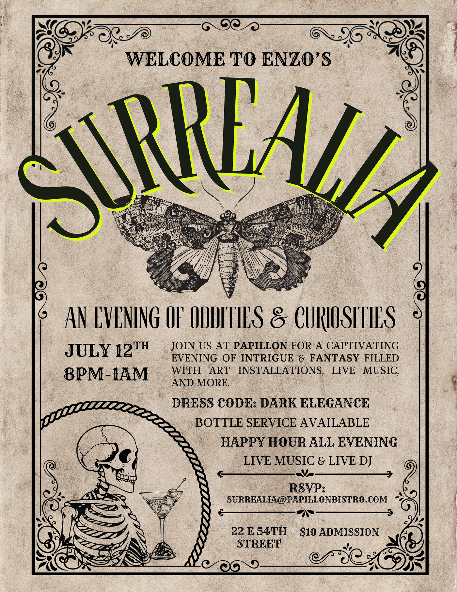
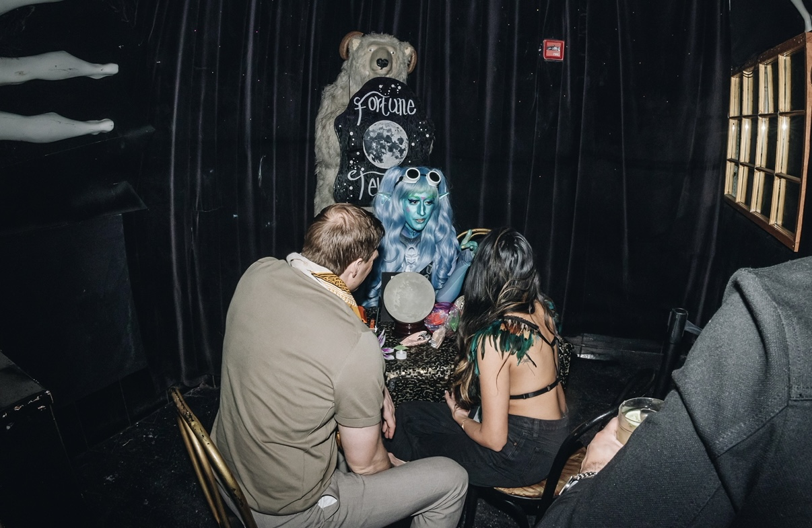
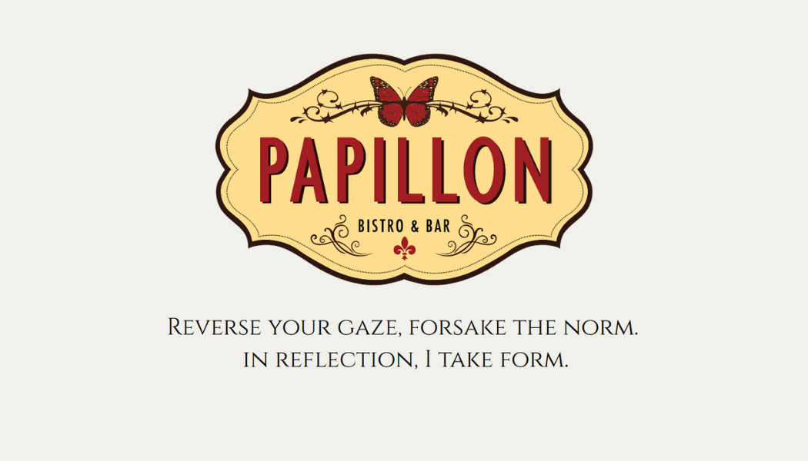
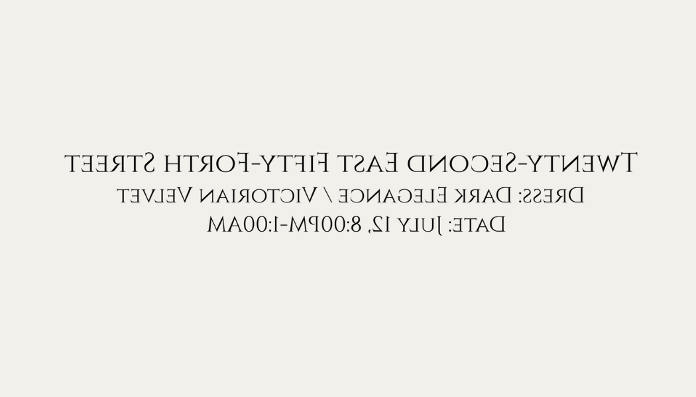
More from Campus Events Board
Four additional events produced through Campus Events Board — each open to the whole University of Tennessee student body.
Casino Night
Helped organize and host a campus casino night for the UT student body, featuring classic casino-style games using raffle-based play. Supported event logistics, game setup, and on-site operations to create an engaging, low-pressure social experience for students.
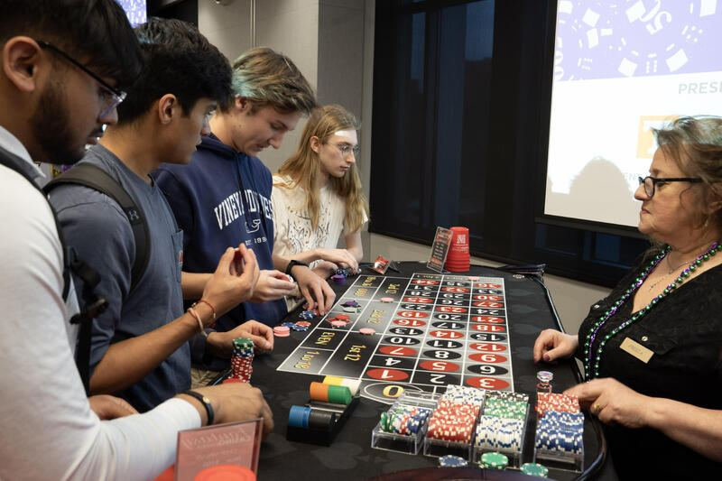
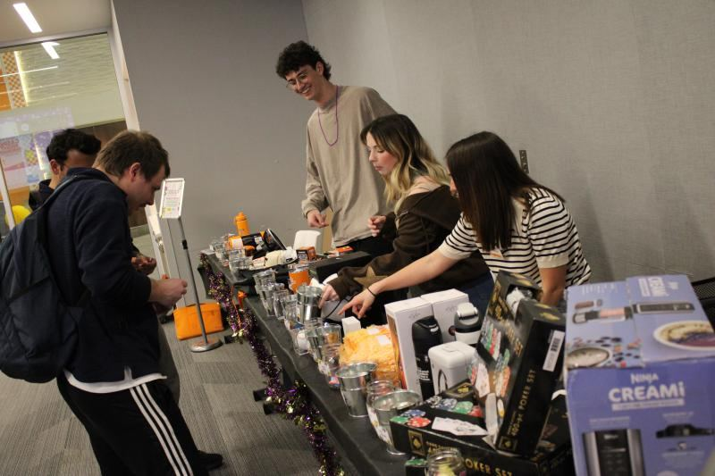
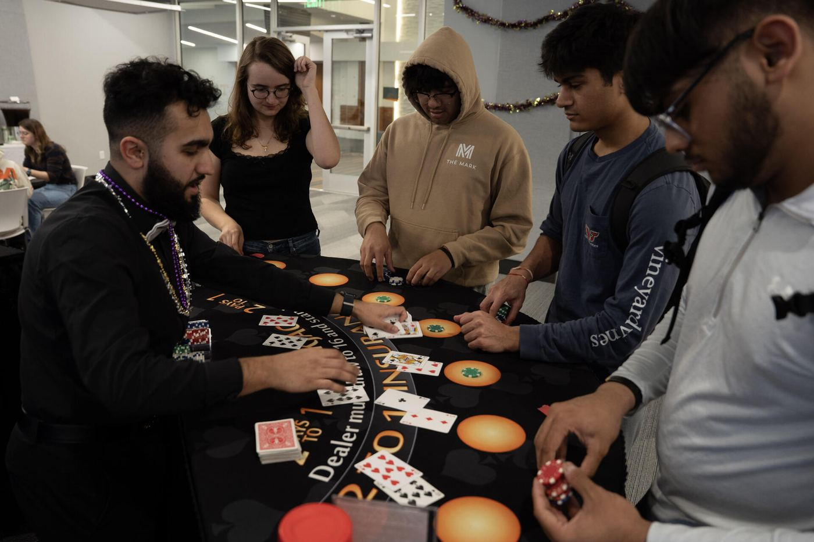
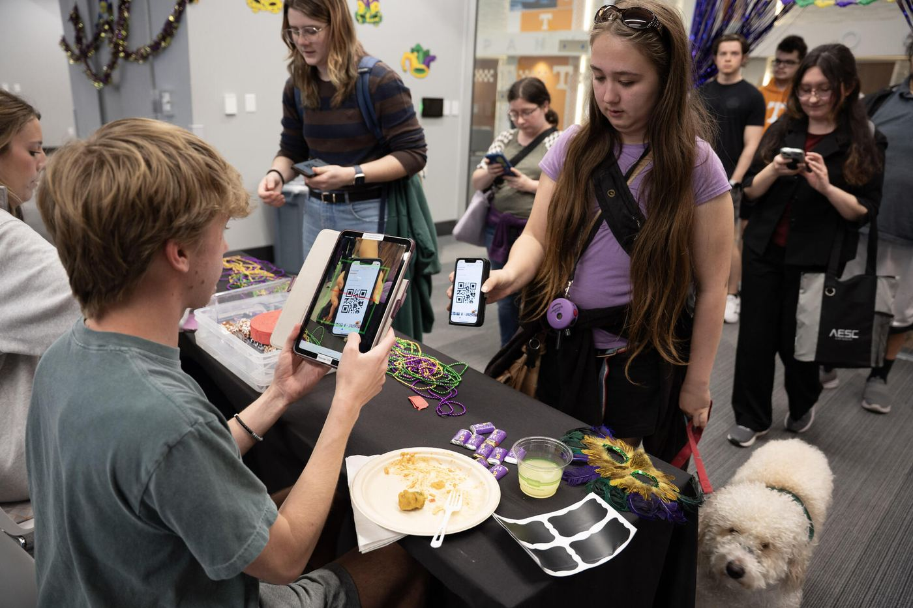
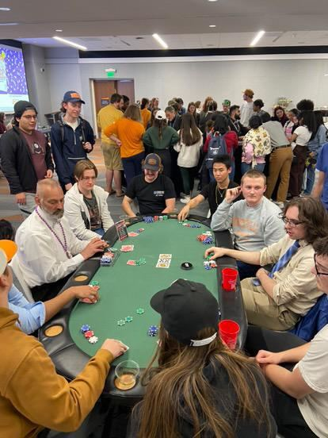
CarniVOL
Helped bring a campus-wide carnival to life for the UT student body, from planning and logistics to on-site execution. Worked closely with student leaders and vendors to create a high-energy, engaging experience for students.
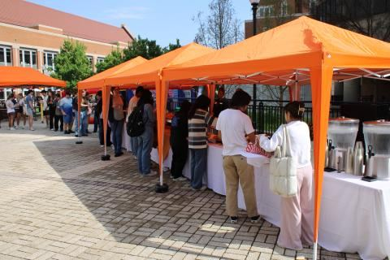
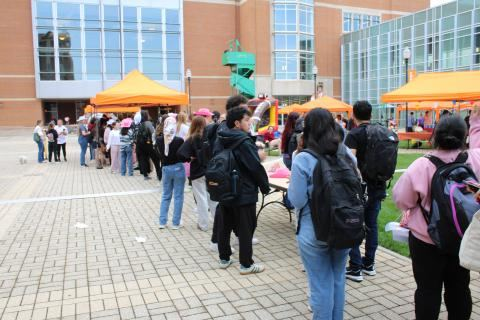
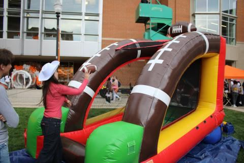
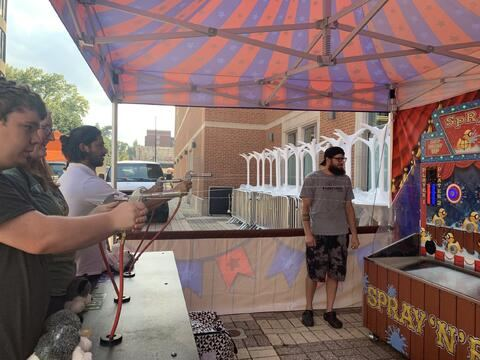
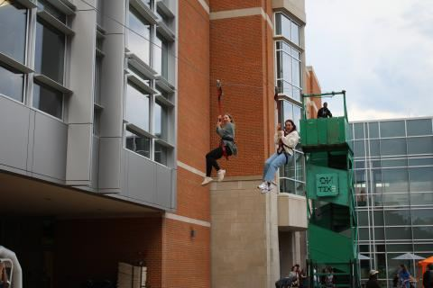
Rocky Top Petting Zoo
Contributed to the planning and execution of a campus petting zoo, coordinating vendors, setup, and on-site logistics. Played a role in maintaining event flow and ensuring a positive experience for attendees — reinforcing my skills in event operations and adapting to unique live event environments.
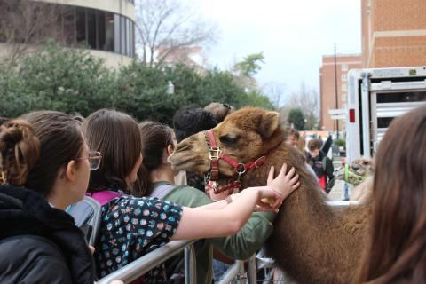
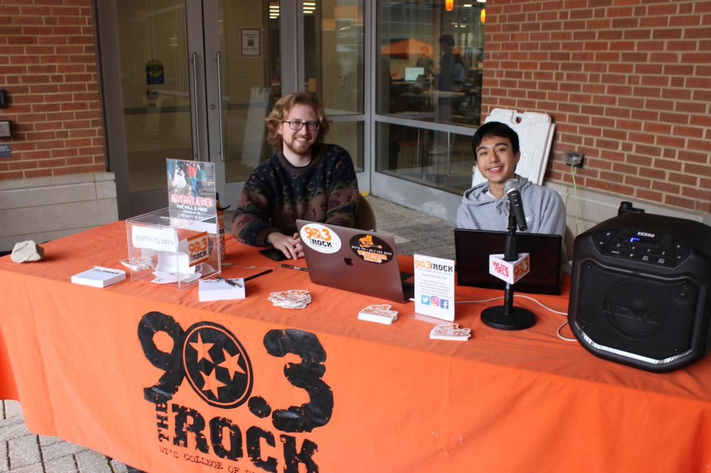
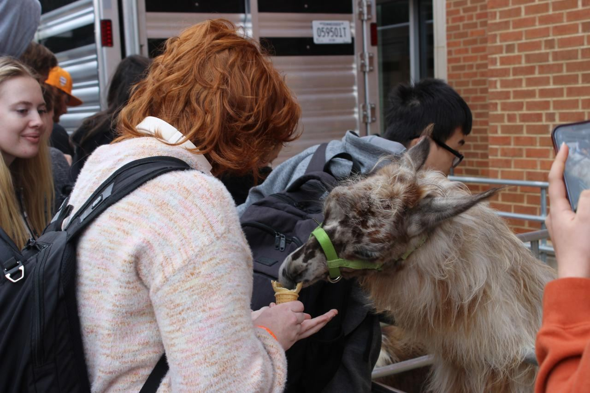
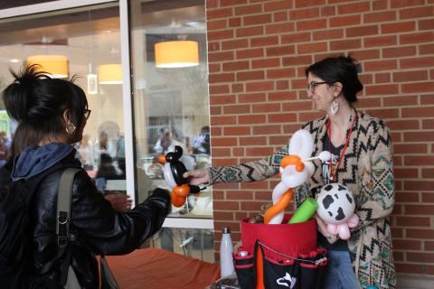
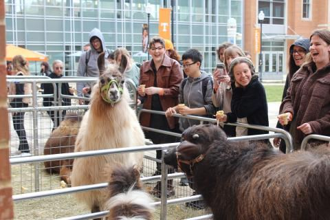
Party in the Park
Played a key role in bringing "Party in the Park" to life — an end-of-year campus celebration featuring rides, activities, and food for the UT student body. Collaborated with student leadership and vendors to execute a seamless, high-impact event experience that strengthened my operational mindset and passion for live events at scale.
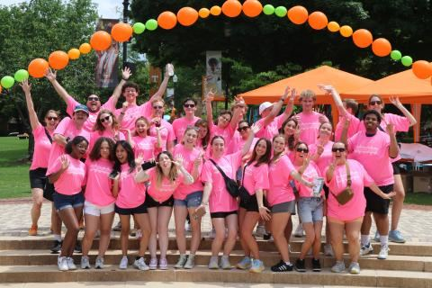
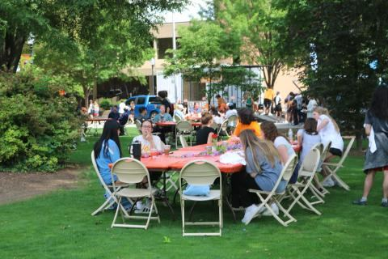
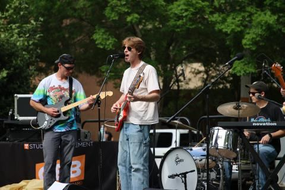
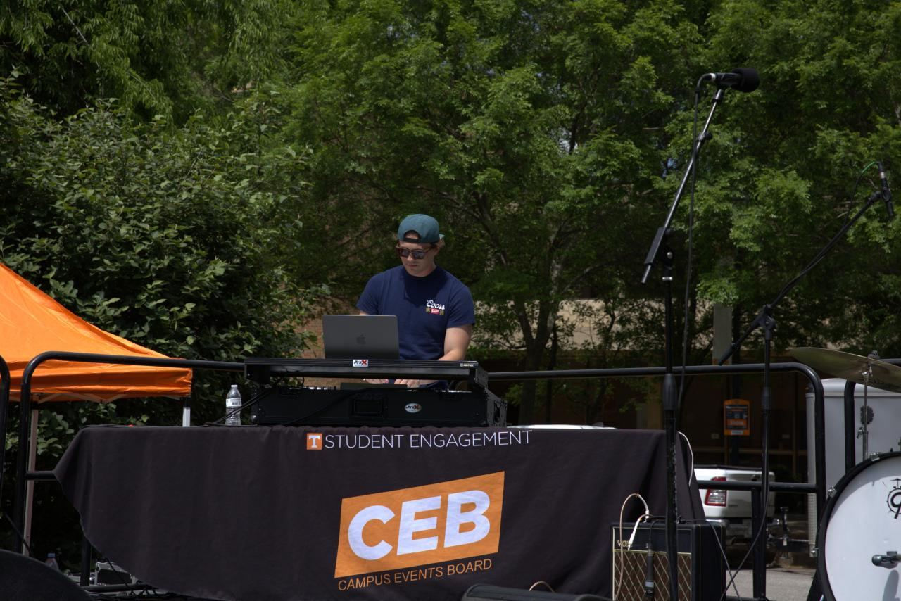
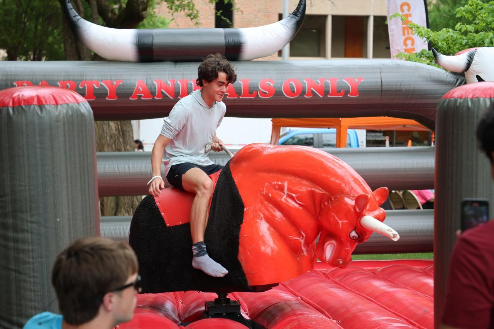
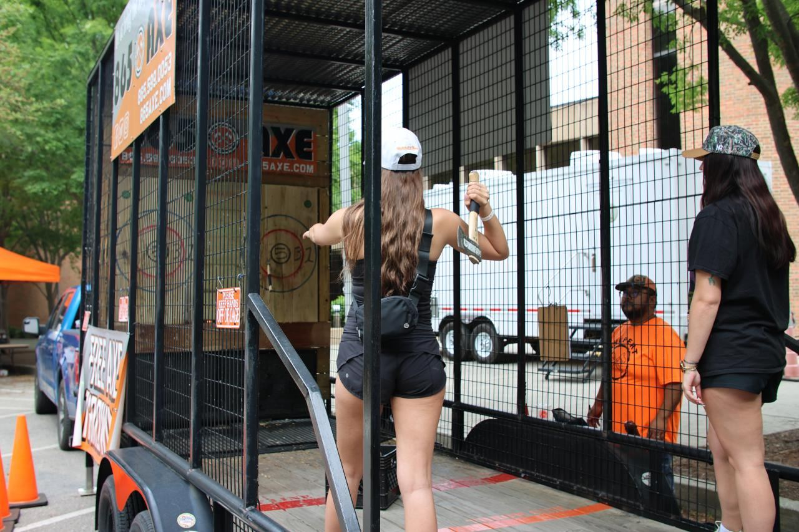